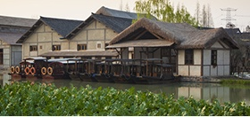
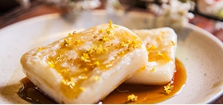
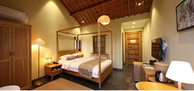

春季来乌村，缤纷活动，周末八折特价
by 乌村村委会
2017年3月1日~2017年3月20日，乌村开启春季特惠，周末享八折。原价980RBM/人每晚起，现价780RBM/人每晚起！ 夜宿乌镇，七八个星天外，两三点雨山前。一日三餐样样不同，精致小吃不限量。摘草莓，炊火饭......20余项活动等你参与！ 游客朋友需要通过乌镇旅游： www.ewuzhen.com，乌镇旅游手机网：am.wuzhen.com.cn提前网络预订。
-
 乌村游览+东西栅游览
-
一日三餐
-
 不限量特色小吃
-
20余项精彩活动
-
 特色住宿
-
贴心CCO服务
1.可提前预订15天内的产品，如乌镇互联网国际会展中心遇临时性重大活动或场馆保养等问题确实无法对外开放时，我们将提前通知您，需要您调整游览行程，谢谢配合。
2.场地开放时间：乌村09：00-20：00；乌镇互联网国际会展中心09：00—17：00，17：00后进入的客人只能远眺乌镇互联网国际会展中心外观，请您合理安排行程；
3.购买该产品，请于游玩当天16：00前凭预订人姓名及手机短信至乌村销售处换取入园套餐券（乌村销售处位于乌镇环河路尽头右转800米左右）；
4.使用有效期：套餐券当日进出一次有效，不能重复使用；
5.退换规则：如需退换，请至少提前一天及以上通过此网站提交申请, 逾期不接受退换；
6.为保证乌镇互联网国际会展中心的参观效果，请服从现场工作人员的管理，有序排队入场。
点击此处查看套餐详细优惠政策
1.乌村内河道密布，水深危险，请注意安全，未成年人必须有成人监护并保持随时照顾；
2.乌村不得携带宠物入内；
3.未经许可，不可进行超出正常游览观光用途的摄影、摄像、录音、航拍或任何形式的记录、广播或传送，包括但不限于：借用专业摄影、摄像器材、辅助道具、非日常生活服装进行拍摄等（如有婚纱摄影类需求，须先向景区管理部门提交申请，获准后，签订拍摄协议并支付相关费用，按协议和相关规定在指定区域开展活动，建议事先向景区管理方咨询）。